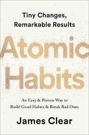

Atomic Habits is the most comprehensive and practical guide on how to create good habits, break bad ones, and get 1 percent better every day. I do not believe you will find a more actionable book on the subject of habits and improvement.
If you’re having trouble changing your habits, the problem isn’t you. The problem is your system.
Bad habits repeat themselves not because you don’t want to change but because you have the wrong system for change. This is one of the core philosophies of Atomic Habits: You do not rise to the level of your goals. You fall to the level of your systems. In this book, you’ll get a proven plan that can take you to new heights.
James Clear, one of the world’s leading experts on habit formation, is known for his ability to distill complex topics into simple behaviors that can be easily applied to daily life and work. Here, he draws on the most proven ideas from biology, psychology, and neuroscience to create an easy-to-understand guide for making good habits inevitable and bad habits impossible.
Along the way, readers will be inspired and entertained with true stories about Olympic gold medalists, award-winning artists, business leaders, life-saving physicians, and star comedians who have used the science of small habits to master their craft and vault to the top of their field.
Atomic Habits will reshape the way you think about progress and success and give you the tools and strategies you need to transform your habits—whether you are a team looking to win a championship, an organization hoping to redefine an industry, or simply an individual who wishes to quit smoking, lose weight, reduce stress, and achieve success that lasts.

James Clear’s Atomic Habits is available as a 5-hour and 35-minute unabridged audiobook narrated by the author himself Atomic Habits Audiobook by James Clear - Audible. It provides a practical, science-backed framework to build good habits and break bad ones through tiny, consistent behavioral changes Atomic Habits by James Clear Full Audiobook.